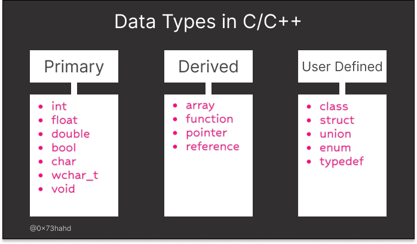
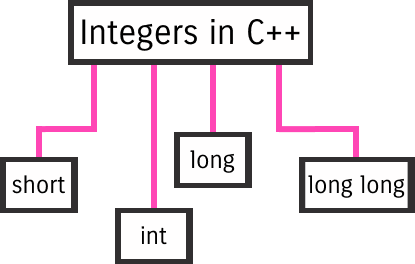
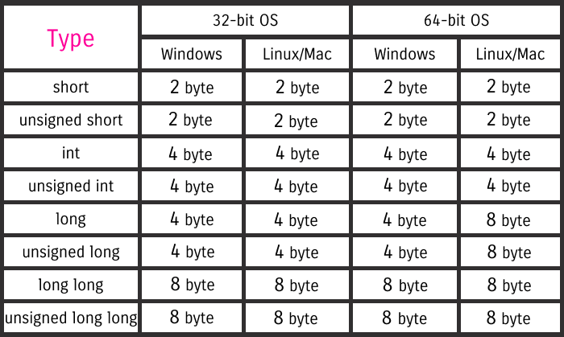
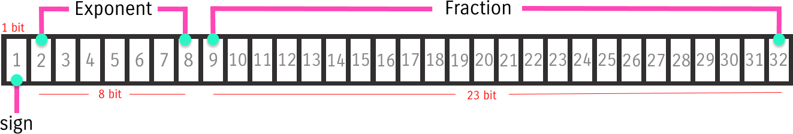
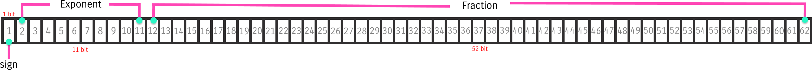
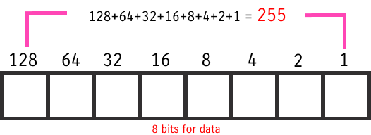

لغة الـسي بلس بلس strongly-typed language، يعني كل variable هـنعملو declaration لازم نحدد الـ data type بتعتو الأول، دا عشان نعرف الـ compiler بالحجم اللي هيحجزو ف الـ memory للـ variable، الحجم هيكون حسب الـ data type لأن كل data type بتاخد مساحة معينة فـ الـ memory، الـ data types فـ الـ ++C ليها أنواع اساسية (Primary)، مشتقة (Derived) و أنواع أحنا بنعملها (User Defined).

1. Integer Types
لغة الـ ++C عندها أربعة أحجام للـ Integer، كل واحد من الأربعة ممكن يكون signed (سالب أو موجب أو صفر) أو unsigned (موجب بس)، للأختصار ممكن نكتب long بس بدل long int وكذا..

Sizes of Integer Types

Integer Literal Representations
| representation | prefix |
|---|---|
| binary | 0b |
| octal | 0 |
| decimal | The default |
| hexadecimal | 0x |
2. Floating-Point Types
الأرقام العشرية والجزء الكسري منها مش بيتخزن بشكل كامل فـ الـ Memory لكن بيتخزن بشكل تقريبي، الـ Floating-Point Types بتاخد جزء محدود من الـ Memory بيسمى بـ type’s precision، لغة الـ ++C ليها ثلاث مستويات precision:
- float → single precision
- double → double precision
- long double → extended precision
Floating-Point Literals
الـ default للـ Floating-point literals هو double precision، لو عايزين الـ single precision بنستخدم suffix f أو F، و للـ extended precision بنستخدم l أو L.
float single_precision = 0.96F; double double_precision = 0.256; long double extended_precision = 0.85L;
ممكن نستخدم Scientific notation:
double avogadro_const = 6.022e23; double electron_charge = 1.6e-19;
float vs double
| Difference | float | double |
|---|---|---|
| IEEE 754 | single | double |
| bits | 32 | 64 |
| bytes | 4 | 8 |
| precision | 7 digits | 15 digits |


3. Booleans
الـ Boolean values اتنين بس true أو false، رقم 1 أو أي قيمة غير الصفر = true، و 0 = false.
bool i_love_u = true; bool i_hate_u = false;
bool answer = 0;
if(answer)
std::cout << "Okay let's watch, I love you <3";
else
std::cout << ".. stupid I'll eat all the popcorn alone 💢";
4. Character Types
الـ Character Types بتخزن الرموز والحروف:
| Type | Size |
|---|---|
| char | 1 byte |
| char16_t | 2 bytes |
| char32_t | 4 bytes |
| signed char | 1 byte |
| unsigned char | 1 byte |
| wchar_t | largest set |
الفرق بين signed و unsigned:
| signed | unsigned | |
|---|---|---|
| range | -128 → 127 | 0 → 255 |
| bits | 7 + sign | 8 |


5. void
بنستخدم void لما الدالة مش بترجع قيمة.
void I_dont_return(){
std::cout << "I don't return any value.";
}
int I_return_int_value(){
int x = 2, y = 8;
return x + y;
}